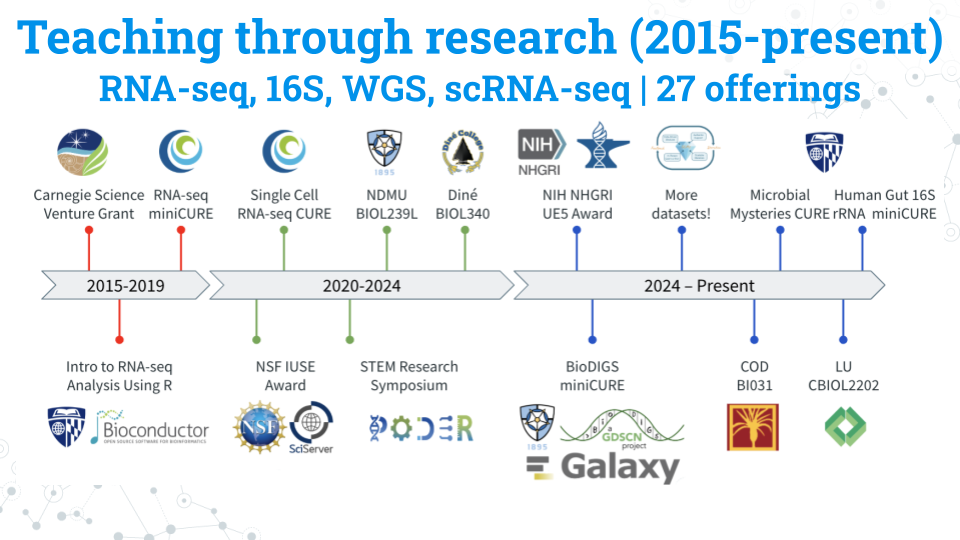

Chapter 1 C-MOOR Overview
1.0.1 What is C-MOOR?
C-MOOR is a project to invite students to join the data science revolution and be part of the next generation of data scientists. This project provides online materials to help students and instructors incorporate authentic research experiences in lower division courses.

Over the years, C-MOOR has expanded its curricula to include RNA-seq, scRNA-seq, 16S amplicon sequencing, and WGS modules. Here’s some statistics about C-MOOR students:
- Students taught: 700+.
- 90% of our students are first years: We break the myth that only advanced-level students can perform and excel in real research.
- Student research posters: 100+. We choose a poster as our final deliverable to facilitate participation in research symposiums. Posters also allow us to evaluate the efficacy of our curricula over the years and make it easy for instructors to quickly and objectively grade student work. You can see a handful of posters here!
- 50% + Students choose to present posters at optional symposiums: C-MOOR posters have served as the impetus for establishing a new research symposium at Clovis Community College. Our students have attended and won awards at their institution’s research days and at conferences such as GRADS-4C and the ASM Maryland Branch Meeting.
1.0.2 Why data science?
Data Science is an evolving career path for individuals (data scientists) in fields that need to manipulate large amounts of data. The job of a Data Scientist was called by the Harvard Business Review “the sexiest job of the 21st century” Data Scientists are individuals with a curiosity to look through data, identify patterns and develop testable hypotheses. In the Biological Sciences, data scientists dig through data to answer questions about health, disease, evolution, ecology, drug development, and much more. A currently relevant example is compiling and looking at the similarities and differences between the different SARS-CoV-2 strains and identify differences between strains that may lead to differences in rates of infection.
1.0.3 Learning Goals
- Engage with real and current scientific data
- Explore available research resources online
- Recognize the interdisciplinary nature of biological sciences
- Synthesize findings from scientific literature
- Summarize findings and discuss results with your peers
- Collaborate with peers on a data exploration activity